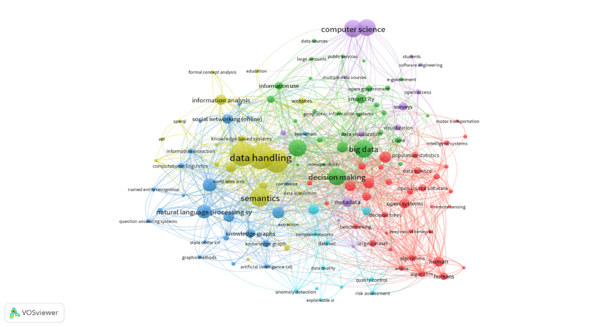
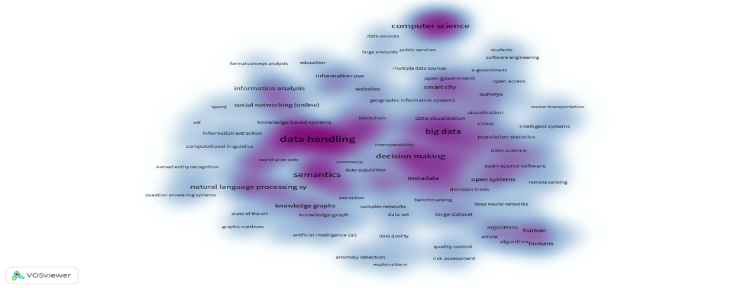
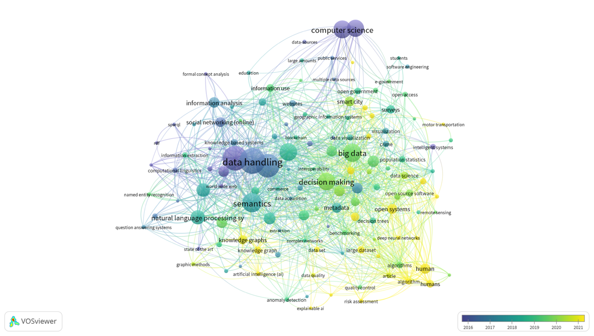

Open data: a vehicle for artificial intelligence innovation
Resumen.
El presente estudio realiza un revisión de la producción científica a través del análisis bibliométrico de datos sobre el estado del conocimiento que reporta Scopus en su repositorio en la conjunción de trabajos en inteligencia artificial (IA) y datos abiertos (DA), cuyos hallazgos permiten disipar las dudas sobre las implicaciones que las variables que producen estos campos de conocimiento generan y además, vislumbrar el enorme potencial de intervención de todas las disciplinas para la solución de problemáticas sociales, medioambientales, políticas, entre muchas otras. También es posible encontrar en este documento, información sobre el estado del arte de las aplicaciones de las disciplinas ante diversas hipótesis y otros indicadores de impacto de los tópicos de estudio.
Palabras clave:
Datos Abiertos, Inteligencia Artificial, Innovación, Gestión del Conocimiento, Bibliometría.
Abstract.
This study reviews the scientific production through bibliometric analysis of data about the state of knowledge reported by Scopus in its repository in the conjunction of research in artificial intelligence (AI) and open data (OD), whose findings allow us to dispel doubts about the implications generated by the variables produced in these fields of knowledge and also to glimpse the enormous potential of intervention of all disciplines for the solution of social, environmental and political problems, among many others. It is also possible to find in this document information about the state of the art of the applications applied by the disciplines to different hypotheses and other indicators of the impact of the topics of study.
Keywords:
Open Data, Artificial Intelligence, Innovation, Knowledge Management, Bibliometrics.
La Inteligencia Artificial (IA) ha aparecido en nuestras vidas como herramienta significativa para la generación de valor en nuestra sociedad, gracias a sus múltiples aplicaciones que permiten hacer más eficientes tareas en diversos (y prácticamente en todos) ámbitos que van desde la formación básica hasta la industria aeroespacial (como lo indican Nalcı et al. (2023) en el trabajo que presentaron sobre redes neuronales artificiales y materiales para dicho sector). Por ello, hablar de IA no sólo está de moda, sino que es elemental para entender los procesos de innovación que experimentará la humanidad en los años por venir.
Datos abiertos: vehículo de innovación de la inteligencia artificial
Otra innovación que de la mano acompaña a este trabajo de investigación y que, al día de este escrito, sigue siendo imprescindible para analizar, comprender y, sobre todo, aplicar, son los Datos Abiertos (DA). Otra herramienta que, a través del despliegue tecnológico que implica y, el marco legal y político que genera su existencia genera innovación a través de la disposición de datos para todas las personas y fines, por ello, es socialmente poderosa e incluyente, entre otras cosas, porque abre las puertas a inmensas formas de conocimiento.
Este trabajo realiza una evaluación de las investigaciones más significativas en el umbral de la producción científica, como acercamiento al conocimiento de la interrelación que presentan los datos abiertos al año 2023 con la inteligencia artificial, para presentar como resultado una perspectiva de los primeros diez años (o un poco más) de la irrupción de estas variables en las prioridades de las personas que hacen ciencia. También se busca contribuir con un vistazo a las tendencias como prospectiva para lo que vendrá en los próximos cinco o diez años más, de acuerdo con los trabajos considerados.
¿Por qué sería necesario este trabajo?, teniendo como plataforma a las ciencias económico administrativas y su impacto en los sectores sociales, esta investigación es necesaria debido al rápido crecimiento de las aplicaciones de la IA en las organizaciones tanto públicas como privadas, por lo que hablar (escribir) sobre este relativamente nuevo fenómeno en el vecindario, simplemente contribuye a ampliar el conocimiento en la materia y extender las posibilidades a nuevas formas de uso para la innovación y mejora en procesos, comunicación, investigación, entre otras, y que todo esto lleve a mejorar las condiciones con las que operarán las organizaciones del futuro, más centradas en el bienestar de las personas, que de paso suponga un entorno (medio ambiente) mejor.
En el mismo sentido, los DA serán, en tanto el acceso a la información no se arraigue como práctica (común) primordial en el quehacer de las organizaciones, motivo de examinación en nuestra sociedad actual que, gracias a las nuevas tecnologías de la información y la comunicación, precisa datos accesibles y manejables para operar. Así pues, ambas variables (aunque no las únicas que maneja este documento) -IA y DA- representan dos tópicos que irremediablemente están comprometidos a ser estudiados.
Las noticias y la opinión publicada en los medios masivos de comunicación y las redes sociales por internet que se han adaptado desde los canales tradicionales de difusión a las masas, documentan de forma cotidiana temores (humano-computadora) hacia la IA, haciendo eco de malas prácticas en el uso de esta, que van desde el plagio en trabajos escolares (McClure, 2018), la sustitución de puestos de trabajo humano por algoritmos (Li y Huang, 2020), hasta la conducción autónoma (Cugurullo y Acheampong, 2023), por ello, hacia la transición de esta tecnología se requiere robustecer los puntos de vista y aislar al conocimiento para mitigar el impacto de esas preocupaciones.
Lo mismo ocurre para los DA, y lo documenta a la perfección el trabajo de investigación de Beno et al. (2017) en el sentido de las barreras que enfrentan los usuarios (problemas para acceder, entender y reusar estos datos), los proveedores de DA (miedo a revelar su información operativa, seguridad y privacidad de los datos, e implicaciones legales) y, desde luego, el entorno político y legal (gubernamental) que enfrenta enormes desafíos en la proveeduría de un esquema claro y práctico de operación.
Datos abiertos: vehículo de innovación de la inteligencia artificial
En los apartados subsecuentes, se realiza el planteamiento teórico de las variables que componen este trabajo y, se discute de forma particular el impacto al campo de conocimiento que respalda, en un momento posterior, el análisis conjunto de esas ideas junto con innovación, para finalizar con el análisis y las discusiones finales tras los hallazgos.
Para este apartado de la investigación, se emplean los conceptos básicos en el contexto de la IA y las definiciones fundamentales disponibles en la literatura a la par de aspectos de la composición de su entendimiento para las ciencias económico administrativas. Asimismo, se incluye una breve historia a través de los momentos clave.
La IA, a pesar de ser un concepto que goza de importante popularidad en la actualidad, tiene su origen en la década de 1950, particularmente desde 1956 como disciplina académica, cuando Marvin Minsky y John McCarthy echaron mano del término para organizar y realizar un taller de verano en Dartmouth College de New Hampshire (Estados Unidos) que financió la Fundación Rockefeller, cuyo escenario atrajo la participación de figuras tan trascendentales en el campo, como Nathaniel Rochester (quien años después diseñó el IBM 701, la primer computadora comercial) y al matemático Claude Shannon (propulsor de la teoría de la información), para con esto establecer las bases de un nuevo ecosistema de generación de conocimiento encaminado a la innovación en dispositivos que emulan a la inteligencia humana (Haenlein y Kaplan, 2019).
Con el tiempo, la capacidad de cómputo y la disponibilidad de información en el ecosistema de las tecnologías de la información propiciaron la aparición de algoritmos expertos (capaces de resolver operaciones matemáticas complejas), las redes neuronales artificiales (Aprendizaje Hebbiano) -más tarde identificadas como deep learning-, que surgen con el objetivo de imitar el aprendizaje de los cerebros humanos (Haenlein y Kaplan, 2019).
Por otra parte, Buchanan (2005) explica que la conceptualización histórica de la IA, se expande más atrás a los planteamientos académicos, ya que filósofos e inventores en diferentes épocas de la humanidad, han conceptualizado y realizado ideas de artefactos inteligentes cuyo propósito principal es mejorar la vida de las personas.
Para efectos prácticos en este estudio, se define a la IA como un conjunto algorítmico capaz de interpretar datos provenientes del entorno, entenderlos y usarlos para realizar determinadas tareas (Haenlein y Kaplan, 2019), y en múltiples campos (Khan y Chandna, 2023). La riqueza en posibilidades de la IA, infunde en el tema una esperanzadora oportunidad para mejorar los procesos en diversas disciplinas que se exploran más adelante en su interacción con los DA para gestar innovación en las organizaciones (Morabito et al., 2024).
Ahora toca el turno al open data (DA, por sus siglas en español) -como también se les conoce a los datos abiertos teóricamente-, que, en esta sección, al igual que en la anterior sobre IA, se discute desde sus fundamentos históricos y contextuales, hasta la extracción de las definiciones académicas, con la finalidad de establecer para este escrito, las bases en su entendimiento.
Datos abiertos: vehículo de innovación de la inteligencia artificial
Los DA surgen a partir de la concepción de la libertad de la información, consagrada en el artículo 19 de la Declaratoria Universal de los Derechos Humanos, que define a la libertad de expresión como derecho básico de las personas, a partir de ello, diversas iniciativas globales y locales dieron forma a un esquema encaminado a la apertura y acceso a información pública (y poco a poco, también privada), que se consolidó con el Memorándum del Presidente Barack Obama de 2009, llamado Transparencia y Gobierno Abierto (por su traducción del inglés), el cuál abrió la puerta para implementar portales de datos gubernamentales abiertos (luego por más países alrededor del mundo) y disponibles para ser usados por todas las personas (Charalabidis et al., 2018).
Con esto se consolidaron los datos abiertos como un fenómeno técnico, tecnológico y organizacional que implica la habilidad de generar acceso con total libertad para la obtención y reuso de datos, en un esquema que implica al gobierno, sector empresarial y ciudadanía (Orłowski, 2021).
Entre los beneficios de los datos abiertos destacan: mayor transparencia, rendición de cuentas, confianza en el gobierno, mayor involucramiento y empoderamiento de la ciudadanía, mejoramiento e innovación de los servicios gubernamentales, mayor desarrollo de innovaciones sociales, mayor competitividad empresarial, crecimiento económico, reuso de datos, generación de nuevas formas de datos y acceso igualitario a la información (Charalabidis et al., 2018).
De acuerdo con el International Open Data Charter (2023), los datos abiertos se basan en los siguientes principios: apertura, pertinencia, accesibilidad y usabilidad, comparables e interoperables, mejorar la gobernanza y empoderamiento social, desarrollo inclusivo e innovador, bajo este esquema, se fijan los mecanismos fundamentales que permiten observar la pertinencia que esta política pública (y posible, estilo de vida) tiene para el desarrollo de la humanidad en la actualidad y, a más de catorce años de su consolidación.
Una vez establecido el marco conceptual y las teorías que propician el entendimiento de estas dos variables (IA y DA), se desarrollará a continuación una revisión fundamentada en los elementos científicos del reconocido repositorio científico Scopus donde interactúan.
En este apartado se explora el universo de producción científica consolidada extraída del repositorio Scopus y que data del periodo comprendido entre los años 2010 y 2023, la producción se concentra mayoritariamente en el campo de las ciencias computacionales (45.2%), las matemáticas (15.3%), ingenierías (11.1%), ciencias sociales (5.8%), ciencias para la toma de decisiones (5.4%), medicina (2.2%), negocios, administración y contabilidad (1.8%), física y astronomía (1.8%), ciencias planetarias (1.4%), ciencias medioambientales (1.4%) y otras (8.6%) (Elsevier B.V., 2023).
De la misma manera, se encuentra una rica producción de ponencias (72.3%), artículos (20.8%), entre otros documentos, con adscripciones principalmente en Estados Unidos, Alemania, Italia, Francia, Reino Unido, China, entre otros. El documento más antiguo data de 2010 y se enfoca en los datos abiertos interconectados que pueden encontrarse en la nube y que gracias a la web semántica pueden reutilizarse por múltiples sistemas como la IA (Jain et al., 2010).
Datos abiertos: vehículo de innovación de la inteligencia artificial
En los primeros años que toma en cuenta esta revisión de producción científica entre DA e IA, se pueden encontrar documentos referentes a distintos algoritmos enfocados en la localización de DA para múltiples aplicaciones (Brickley, 2010; Missier et al., 2010), aplicaciones de IA a partir de información de sectores (como el documento que presenta Mohaghegh (2011) sobre el modelaje de yacimientos petroleros) y la generación de sistemas que aprenden a partir de repositorios de datos abiertos (Bull et al., 2013). En este primer periodo comienzan a visualizarse trabajos más aislados para ambas variables, con ligeras interrelaciones.
A partir de del año 2014 y hasta el año 2018, se observa una consolidación en la producción científica con las temáticas de IA y DA, con trabajos como los de Cordeiro et al. (2014) con enfoque sobre el manejo de información acerca de logística humanitaria y machine learning, o el que presentan Ding et al. (2015) que hace referencia modelos inteligentes para la toma de decisiones en turismo accesible para personas con discapacidad o el trabajo que Babli et al. (2016) también desarrollaron acerca de turismo enfocado en datos climáticos.
La riqueza de enfoques hace a la etapa de mayor auge en la producción científica, un paraíso de tópicos donde se encuentra la IA con datos sobre: seguridad y crimen (Rocca et al., 2016), semántica y sentimientos a través de publicaciones en redes sociales sobre las marcas (Saif et al., 2016), información sobre enfermedades y proyecciones sobre medicamentos (Celebi et al., 2017), sistemas de reconocimiento y Big Data en tiempo real (Rafferty et al., 2018), modelos de predicción de accidentes de tráfico (Cuenca et al., 2018), entre un sinnúmero de diversas temáticas.
Finalmente, del año 2019 a la fecha (2023), destacan por el nivel de citación investigaciones sobre: el mejoramiento de la calidad de los DA para sistemas inteligentes (Ferretti et al., 2019), generación de valor público (Criado y Gil-García, 2019), ciencia abierta (Burgelman et al., 2019) e inteligencia de fuente abierta (Pastor-Galindo et al., 2020), redes neuronales predictivas para múltiples fenómenos y disciplinas (Barrera et al., 2020; Ma, 2022; Norori et al., 2021; Rodgers et al., 2023), notándose una consolidación de los temas hacia las preocupaciones sobre la operatividad de la IA a través de los DA.
Es indiscutible la interrelación de estas tecnologías (DA e IA) con la innovación en múltiples campos, además, se aprecia la conexión de los cambios con la evolución tecnológica que no discrimina las disciplinas ni los orígenes de los problemas a solucionar, adelante se visualizan en términos concretos las correlaciones en familias de términos, su significancia en términos de cantidad, así como la evolución temporal.
A continuación, se define el procedimiento bajo el cual, los datos obtenidos del repositorio Scopus (Elsevier B.V., s/f) serán analizados, con la finalidad de generar una explicación que refuerce su entendimiento y pertinencia, esta base de datos es reconocida a nivel internacional gracias a la calidad y rigurosidad de los trabajos que ahí se indexan (Powell y Peterson, 2017). Por ello, este estudio se encamina en una metodología cualitativa que permite explorar de forma preliminar el campo y generar un preámbulo necesario para el conocimiento (Hernández Sampieri y Mendoza Torres, 2023).
Datos abiertos: vehículo de innovación de la inteligencia artificial
Particularmente, este trabajo hace uso del análisis bibliométrico de una base de datos -que se describe adelante- a partir de la cual se pueden identificar patrones en la producción científica con base en las coincidencias en la literatura en términos de palabras clave, autores, países de procedencia, entre otros, y que es posible, gracias a las salidas gráficas que hacen posible distintas plataformas especializadas en este tipo de procesamiento de datos (Qu et al., 2023).
Para generar el cuerpo de datos a analizar, se efectuó una búsqueda en la base de datos científica Scopus bajo los siguientes parámetros: Documentos cuyo título fuera “Open Data” y que coincidiera también con “Artificial Intelligence”; dicho proceso, arrojó un total de 423 trabajos que datan del año 2010 a la fecha (2023), a partir de esto se procedió a la generación y descarga de una base de datos con la información básica para generar citas de los documentos (nombre de autor o autores, título del documento, año de publicación, entre otros), datos bibliográficos (afiliación, ISSN, editores, etc.), resúmenes, financiamiento, entre otros datos.
La base de datos obtenida en formato .RIS, el cual es un archivo de texto plano que puede contener datos bibliográficos (Biblioteca de la Universidad de Sevilla, 2023), aglutina, entre otras cosas, 3,639 palabras clave, así como datos de 1,425 autores, de esta forma, se cuenta con un marco básico para el análisis de la información a través de un sistema de bibliometría que permite encontrar similitudes en la información.
El programa empleado para realizar este análisis fue VOSviewer (Centre for Science and Technology Studies, s/f) en su versión 1.6.20 para sistema macOS, el cual permite mapear datos a partir de la identificación de coocurrencias entre los mismos, estos datos pueden referirse a los autores de documentos científicos o a las palabras clave de estos (van Eck y Waltman, 2014).
Para generar las visualizaciones de clústers, se procedió a realizar el análisis en VOSviewer a partir de la base de datos descrita anteriormente mediante un análisis de coocurrencias en palabras clave, generando las representaciones gráficas de las Figuras 1, 2 y 3 en las que se muestran datos de todos los tópicos con cinco o más ocurrencias (142 en total) cuyos hallazgos se describen a continuación.
En esta sección se sintetizan los hallazgos esenciales para el análisis bibliométrico que se atribuye a esta investigación, todo esto, a partir de las salidas de agrupaciones de datos realizadas en VOSviewer que a continuación se indican: Redes semánticas por co-ocurrencia de los términos “Artificial Intelligence” y “Open Data” en repositorio Scopus (2010-2023) (Véase Figura 1); Densidad de redes semánticas por co-ocurrencia de los términos “Artificial Intelligence” y “Open Data” en repositorio Scopus (2010-2023) (Véase Figura 2) y; Redes semánticas por co-ocurrencia de los términos “Artificial Intelligence” y “Open Data” en repositorio Scopus (2010-2023) a lo largo del tiempo (Véase Figura 3).
Figura 1.
Datos abiertos: vehículo de innovación de la inteligencia artificial
Redes semánticas por co-ocurrencia de los términos “Artificial Intelligence” y “Open Data” en repositorio Scopus (2010-2023).

Nota. Elaboración propia
Los datos en la Figura 1 se refieren a la agrupación de variables que presentan relaciones de sus términos entre sí, y pueden distinguirse de acuerdo con la fuerza de sus coocurrencias con base en colores determinados (rojo, amarillo, verde, tonos de azul, morado, entre otros), las líneas que las interrelacionan también presentan el patrón de colores que puede atenuarse cuando se presentan coincidencias con variables relacionadas con otros clusters.
Con base en los datos obtenidos (véase Figura 1), pueden observarse seis agrupaciones considerables: destacan la que se muestra con color amarillo la cual se refiere al manejo de datos (datos abiertos, semántica, análisis de información, entre otras), con color verde, las variables en trabajos relativos al Big Data, uso de la información, toma de decisiones, entre otras; asimismo, el bloque morado, que se refiere a las ciencias computacionales, ingeniería de sotfware, diseño, entre otros; la agrupación en color rojo, que es significativamente variada, y aglutina a la ciencia de datos, al deep learning y los trabajos sobre personas y; finalmente, los grupos en tonos azules, que se refieren a la inteligencia artificial en términos de los formatos de reconocimiento, procesamiento de lenguaje y calidad de los datos.
Gracias a la representación gráfica de las agrupaciones mencionadas, se pueden identificar los patrones en las relaciones de las investigaciones científicas sobre los datos abiertos y la inteligencia artificial y así, realizar propuestas con base en las visualizaciones de la información que contribuyan en el conocimiento del área.
Figura 2.
Datos abiertos: vehículo de innovación de la inteligencia artificial
Densidad de redes semánticas por co-ocurrencia de los términos “Artificial Intelligence” y “Open Data” en repositorio Scopus (2010-2023).

Nota. Elaboración propia a partir de los datos
A partir de la Figura 2, es posible confirmar gracias a la representación en formato de mapa de calor, cuáles son las temáticas donde se concentra la mayor cantidad del trabajo científico realizado, destacan el manejo de datos, Big Data, redes semánticas, toma de decisiones y ciencias computacionales en la intersección de los DA y la IA como variables teóricas principales de este análisis.
Asimismo, a partir del análisis de densidad de las agrupaciones (véase Figura 2), es también posible identificar las variables y campos que se encuentran en desarrollo en las investigaciones o bien, que no han tenido el desarrollo suficiente en la interrelación de la producción científica de las variables inherentes a este estudio.
Figura 3.
Redes semánticas por co-ocurrencia de los términos “Artificial Intelligence” y “Open Data” en repositorio Scopus (2010-2023) a lo largo del tiempo.

Nota. Elaboración propia a partir de las variables
Gracias a las posibilidades de modelización gráfica de las relaciones entre variables que permite VOSviewer, es posible advertir la evolución temporal de los trabajos (véase Figura 3), cómo iniciaron en 2010 y con los enfoques vigentes a 2023, de esta manera es posible observar que, en sus inicios, el campo de estudio entre IA y DA, se enfoca en las ciencias computacionales, el manejo de datos, Big Data, entre las más destacadas (de acuerdo con los tonos en morado y azules más intensos).
Datos abiertos: vehículo de innovación de la inteligencia artificial
Con el tiempo, y en su periodo de progreso, las variables de estudio, además de los campos que dieron origen a su interrelación, se fueron decantando por temas como la semántica (véase en la Figura 3, los grupos en tonos verdes y azulados), en los algoritmos del procesamiento de lenguaje natural, ciudades inteligentes, gobierno abierto y el uso de la información que fueron propiciando los nuevos algoritmos.
Finalmente, con el paso del tiempo (de acuerdo con los tonos más amarillos que muestra la Figura 3), las investigaciones y trabajos científicos que se recopilan en Scopus, apuntan a la examinación de temas centrados en las personas, la inteligencia generativa y la apertura para la innovación en los espacios teóricos estudiados.
La innovación, pese a no ser un tópico declarado para este estudio, es el vínculo inherente en esta comparativa entre los datos abiertos y la inteligencia artificial, ya que justamente la naturaleza de estas variables conduce a manifestaciones sobre su existencia en forma de nuevas propuestas en el uso de las tecnologías de la información para resolver problemas en distintos ámbitos sociales y la economía.
A pesar de que las interrelaciones de las palabras clave se presentan en agrupaciones coloridas particulares, no son tan excluyentes entre sí, la mayoría de interrelaciona con otros conjuntos y dan cuenta de que pueden existir etiquetas heterogéneas que conceptualmente se interrelacionan con campos afines, sin embargo, esto es algo en lo que los programas de análisis como VOSviewer (o bien nosotros, los propios investigadores) tendrían que mejorar para el análisis a futuro.
Se puede entender gracias a los hallazgos que la conjunción entre la IA y los DA aún es un campo para seguir extrayendo conocimientos, máxime para la exploración de las nuevas tecnologías en la forma que se llevan a cabo los procesos de almacenamiento y extracción de información en la mente humana (redes neuronales), con la finalidad de robustecer los algoritmos que permitan emular el funcionamiento del razonamiento de las personas.
Es previsible que la ciencia de los datos y los algoritmos inteligentes (deep learning) no sea sólo tarea de las ciencias computacionales, si no que requerirá la intervención multidisciplinaria, en especial de las ciencias sociales, puesto que el diseño y estudio de esquemas de organización pública para la apertura de la información es quehacer fundamental.
La información presentada en este estudio a partir de los datos examinados, posibilitan echar una mirada a la excepcional oportunidad de disertación sobre los paradigmas que representan la ciencia de datos y el aprendizaje profundo a través de esquemas de redes neuronales, coyuntura que, para las ciencias sociales, como las económico-administrativas, se extiende en torno a la gestión de los recursos que son primordiales para el desarrollo de estos propósitos.
Datos abiertos: vehículo de innovación de la inteligencia artificial
Otro aspecto importante que llama la atención en este trabajo, es el formato en que las investigaciones sobre los campos se presentaron, resultando debatible que abunden los trabajos presentados en foros (ponencias) y la falta de disertaciones más profundas o determinantes sobre los fenómenos.
Este estudio también es una oportunidad para disipar los miedos en la inteligencia artificial y la sustitución de personas en diversos ámbitos y profesionales que para algunos representa este adelanto tecnológico, ya que a través de la comprensión de las implicaciones que tienen las variables que se presentan, se pueden intuir estos esfuerzos por el conocimiento, como una ventana para valorar implicaciones y perseguir las fallas para minimizar los peligros.
Se hace un llamado a las disciplinas (especialmente a las ciencias económico-administrativas) que no participan -o no lo hacen de forma importante-, para intervenir, presentar sus discusiones y plantear soluciones en el terreno de la inteligencia artificial. Y a futuro, que no se deje de medir, de documentar el impacto de estas nuevas tecnologías en la sociedad, la consecución de los derechos básicos y, la sustentabilidad y sostenibilidad ambiental.
Babli, M., Ibáñez, J., Sebastiá, L., Garrido, A., y Onaindia, E. (2016). An intelligent system for smart tourism simulation in a dynamic environment. En Tzortzis G., Pierris G., y Spyropoulos C.D. (Eds.), CEUR Workshop Proc. (Vol. 1724, pp. 15–22). CEUR-WS; Scopus. https://www.scopus.com/inward/record.uri?eid=2-s2.0-84999651990&partnerID=40&md5=65f163e79f539f45552815c60521db95
Barrera, J. M., Reina, A., Maté, A., y Trujillo, J. C. (2020). Solar Energy Prediction Model Based on Artificial Neural Networks and Open Data. Sustainability, 12(17), 6915. https://doi.org/10.3390/su12176915
Beno, M., Figl, K., Umbrich, J., y Polleres, A. (2017). Open Data Hopes and Fears: Determining the Barriers of Open Data. 2017 Conference for E-Democracy and Open Government (CeDEM), 69–81. https://doi.org/10.1109/CeDEM.2017.22
Biblioteca de la Universidad de Sevilla. (2023). Importación incompatible con Web Importer. Biblioteca de la Universidad de Sevilla. https://guiasbus.us.es/mendeley/importacionincompatible
Brickley, D. (Ed.). (2010). Linked data meets artificial intelligence: Papers from the AAAI spring symposium ; [held March 22 - 24, 2010 at Stanford University, Stanford, California USA]. AAAI Press.
Buchanan, B. G. (2005). A (Very) Brief History of Artificial Intelligence. AI Magazine, 26(4), 53. https://doi.org/10.1609/aimag.v26i4.1848
Bull, S., Johnson, Matthew. D., Alotaibi, M., Byrne, W., y Cierniak, G. (2013). Visualising Multiple Data Sources in an Independent Open Learner Model. En H. C. Lane, K. Yacef, J. Mostow, y P. Pavlik (Eds.), Artificial Intelligence in Education (Vol. 7926, pp. 199–208). Springer Berlin Heidelberg. https://doi.org/10.1007/978-3-642-39112-5_21
Datos abiertos: vehículo de innovación de la inteligencia artificial
Burgelman, J.-C., Pascu, C., Szkuta, K., Von Schomberg, R., Karalopoulos, A., Repanas, K., y Schouppe, M. (2019). Open Science, Open Data, and Open Scholarship: European Policies to Make Science Fit for the Twenty-First Century. Frontiers in Big Data, 2, 43. https://doi.org/10.3389/fdata.2019.00043
Celebi Celebi, R., Erten, Ö., y Dumontier, M. (2017). Machine Learning based Drug Indication Prediction using Linked Open Data. En Splendiani A., Marshall M.S., Paschke A., Romano P., Presutti V., y Burger A. (Eds.), CEUR Workshop Proc. (Vol. 2042). CEUR-WS; Scopus. https://www.scopus.com/inward/record.uri?eid=2-s2.0-85041490180&partnerID=40&md5=650eacc00cb69d26e459a30e3473009e
Centre for Science and Technology Studies, L. U. (s/f). VOSviewer. Recuperado el 20 de octubre de 2018, de http://www.vosviewer.com
Charalabidis, Y., Zuiderwijk, A., Alexopoulos, C., Janssen, M., Lampoltshammer, T., y Ferro, E. (2018). The World of Open Data: Concepts, Methods, Tools and Experiences (Vol. 28). Springer International Publishing. https://doi.org/10.1007/978-3-319-90850-2
Cordeiro, K. de F., Machado Campos, M. L., y da Silva Borges, M. R. (2014). Adaptive integration of information supporting decision making: A case on humanitarian logistic. En ISCRAM 2014 Conference proceedings book of papers: 11th International Conference on Information Systems for Crisis Response and Management. The Pennsylvania State University.
Criado, J. I., y Gil-Garcia, J. R. (2019). Creating public value through smart technologies and strategies: From digital services to artificial intelligence and beyond. International Journal of Public Sector Management, 32(5), 438–450. https://doi.org/10.1108/IJPSM-07-2019-0178
Cuenca, L. G., Puertas, E., Aliane, N., y Andres, J. F. (2018). Traffic Accidents Classification and Injury Severity Prediction. 2018 3rd IEEE International Conference on Intelligent Transportation Engineering (ICITE), 52–57. https://doi.org/10.1109/ICITE.2018.8492545
Cugurullo, F., y Acheampong, R. A. (2023). Fear of AI: An inquiry into the adoption of Cugurullo autonomous cars despite fear, and a theoretical framework for the study of artificial intelligence technology acceptance. AI & SOCIETY. https://doi.org/10.1007/s00146-022-01598-6
Ding, C., Wald, M., y Wills, G. (2015). Linked data-driven decision support for accessible travelling. Proceedings of the 12th International Web for All Conference, 1–2. https://doi.org/10.1145/2745555.2746681
Elsevier B.V. (s/f). Scopus. Recuperado el 18 de octubre de 2018, de https://www.scopus.com
Ferretti, G., Malandrino, D., Angela Pellegrino, M., Pirozzi, D., Renzi, G., y Scarano, V. (2019). A Non-prescriptive Environment to Scaffold High Quality and Privacy-aware Production of Open Data with AI. Proceedings of the 20th Annual International Conference on Digital Government Research, 25–34. https://doi.org/10.1145/3325112.3325230
Haenlein, M., y Kaplan, A. (2019). A Brief History of Artificial Intelligence: On the Past, Present, and Future of Artificial Intelligence. California Management Review, 61(4), 5–14. https://doi.org/10.1177/0008125619864925
Hernández Sampieri, R., y Mendoza Torres, C. P. (2023). Metodología de la investigación: Las rutas cuantitativa, cualitativa y mixta (Segunda edición). McGraw-Hill Education.
International Open Data Charter. (2023). International Open Data Charter [Organization]. Open Data Charter. https://opendatacharter.net/
Datos abiertos: vehículo de innovación de la inteligencia artificial
Jain, P., Hitzler, P., Yeh, P. Z., Verma, K., y Sheth, A. P. (2010). Linked data is merely more data. AAAI Spring Symp. Tech. Rep., SS-10-07, 82–86. Scopus. https://www.scopus.com/inward/record.uri?eid=2-s2.0-77957969717&partnerID=40&md5=595c64cdf8390768c1df460937088162
Khan, S. B., y Chandna, S. (2023). Introduction to human-computer interaction using artificial intelligence. En Innovations in Artificial Intelligence and Human-Computer Interaction in the Digital Era. Elsevier. https://doi.org/10.1016/C2021-0-00452-1
Li, J., y Huang, J.-S. (2020). Dimensions of artificial intelligence anxiety based on the integrated fear acquisition theory. Technology in Society, 63, 101410. https://doi.org/10.1016/j.techsoc.2020.101410
Ma, X. (2022). Knowledge graph construction and application in geosciences: A review. Computers & Geosciences, 161, 105082. https://doi.org/10.1016/j.cageo.2022.105082
McClure, P. K. (2018). “You’re Fired,” says the Robot: The Rise of Automation in the Workplace, Technophobes, and Fears of Unemployment. Social Science Computer Review, 36(2), 139–156. https://doi.org/10.1177/0894439317698637
Missier, P., Sahoo, S. S., Zhao, J., Goble, C., y Sheth, A. (2010). Janus: From Workflows to Semantic Provenance and Linked Open Data. En D. L. McGuinness, J. R. Michaelis, y L. Moreau (Eds.), Provenance and Annotation of Data and Processes (Vol. 6378, pp. 129–141). Springer Berlin Heidelberg. https://doi.org/10.1007/978-3-642-17819-1_16
Mohaghegh, S. D. (2011). Reservoir simulation and modeling based on artificial intelligence and data mining (AI&DM). Journal of Natural Gas Science and Engineering, 3(6), 697–705. https://doi.org/10.1016/j.jngse.2011.08.003
Morabito, F. C., Kozma, R., Alippi, C., y Choe, Y. (2024). Advances in AI, neural networks, and brain computing: An introduction. En Artificial Intelligence in the Age of Neural Networks and Brain Computing. Elsevier. https://doi.org/10.1016/C2021-0-01760-0
Nalcı, A. S., Çetinkaya, M., y Karalar, A. B. (2023). Estimation of Strain Values of Aluminum Based Aerospace Materials by Using Artificial Neural Networks. 2023 10th International Conference on Recent Advances in Air and Space Technologies (RAST), 1–5. https://doi.org/10.1109/RAST57548.2023.10197946
Norori, N., Hu, Q., Aellen, F. M., Faraci, F. D., y Tzovara, A. (2021). Addressing bias in big data and AI for health care: A call for open science. Patterns, 2(10), 100347. https://doi.org/10.1016/j.patter.2021.100347
Orłowski, C. (2021). Management of IOT open data projects in smart cities. Academic press.
Pastor-Galindo, J., Nespoli, P., Gomez Marmol, F., y Martinez Perez, G. (2020). The Not Yet Exploited Goldmine of OSINT: Opportunities, Open Challenges and Future Trends. IEEE Access, 8, 10282–10304. https://doi.org/10.1109/ACCESS.2020.2965257
Powell, K. R., y Peterson, S. R. (2017). Coverage and quality: A comparison of Web of Science and Scopus databases for reporting faculty nursing publication metrics. Nursing Outlook, 65(5), 572–578. https://doi.org/10.1016/j.outlook.2017.03.004
Qu, H., Nordin, N. A., Tsong, T. B., y Feng, X. (2023). A Bibliometrics and Visual Analysis of Global Publications for Cognitive Map (1970-2022). IEEE Access, 1–1. https://doi.org/10.1109/ACCESS.2023.3279198
Rafferty, J., Synnott, J., Nugent, C. D., Ennis, A., Catherwood, P. A., Mcchesney, I., Cleland, I., y Mcclean, S. (2018). A Scalable, Research Oriented, Generic, Sensor Data Platform. IEEE Access, 6, 45473–45484. https://doi.org/10.1109/ACCESS.2018.2852656
Datos abiertos: vehículo de innovación de la inteligencia artificial
Rocca, G. B., Castillo-Cara, M., Levano, R. A., Herrera, J. V., y Orozco-Barbosa, L. (2016). Citizen security using machine learning algorithms through open data. 2016 8th IEEE Latin-American Conference on Communications (LATINCOM), 1–6. https://doi.org/10.1109/LATINCOM.2016.7811562
Rodgers, C. M., Ellingson, S. R., y Chatterjee, P. (2023). Open Data and transparency in artificial intelligence and machine learning: A new era of research. F1000Research, 12, 387. https://doi.org/10.12688/f1000research.133019.1
Saif, H., Fernandez, M., Kastler, L., y Alani, H. (2016). A linked open data approach for sentiment lexicon adaptation. En Paulheim H., Gentile A.L., d’Amato C., y Zhang Z. (Eds.), CEUR Workshop Proc. (Vol. 1699, pp. 11–22). CEUR-WS; Scopus. https://www.scopus.com/inward/record.uri?eid=2-s2.0-84992663704&partnerID=40&md5=34d5671c94e5b0ee6ba3f04a4dd32caa
Van Eck, N. J., y Waltman, L. (2014). Visualizing Bibliometric Networks. En Y. Ding, R. Rousseau, y D. Wolfram (Eds.), Measuring Scholarly Impact (pp. 285–320). Springer International Publishing. https://doi.org/10.1007/978-3-319-10377-8_13
Licencia: Esta obra está protegida bajo una Licencia Creative Commons Atribución-CompartirIgual 4.0 Internacional.